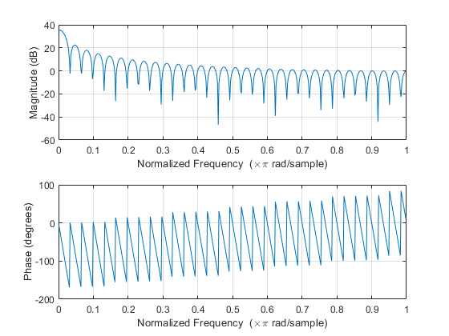
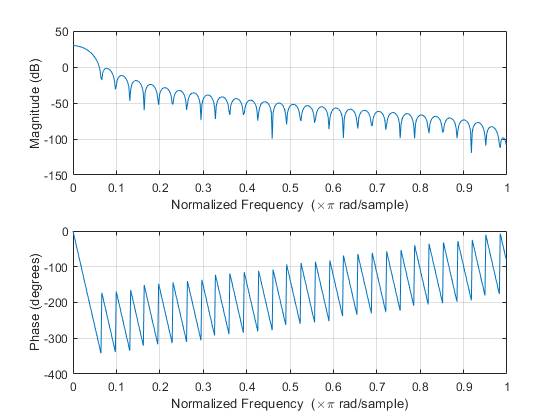
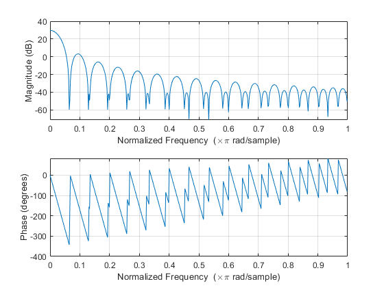
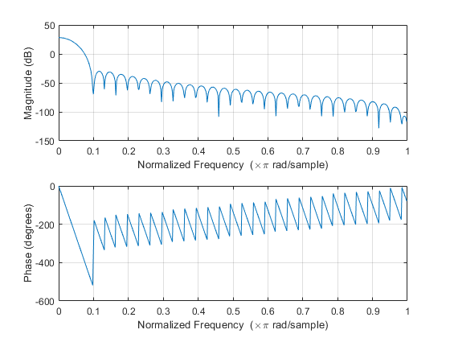
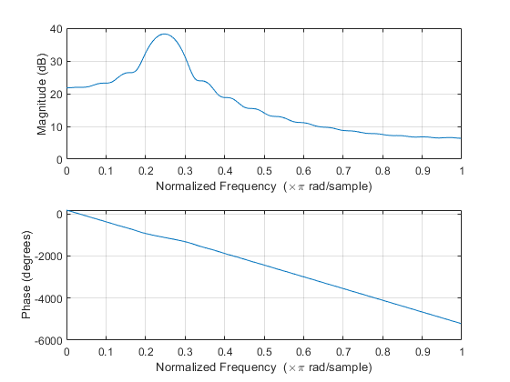
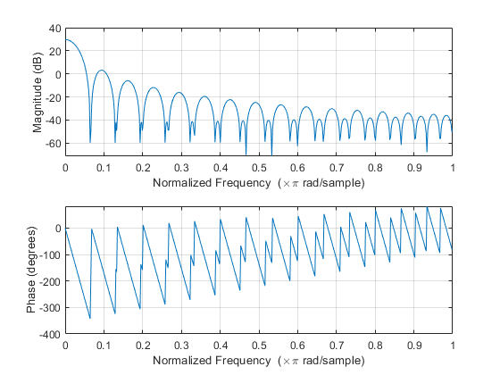
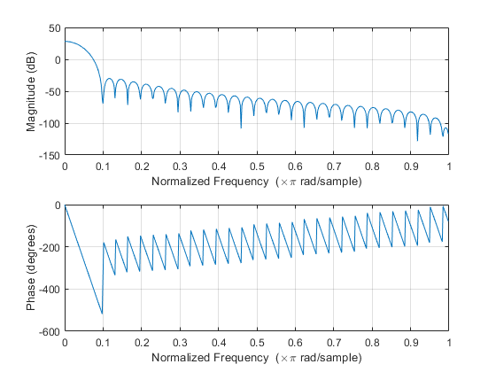
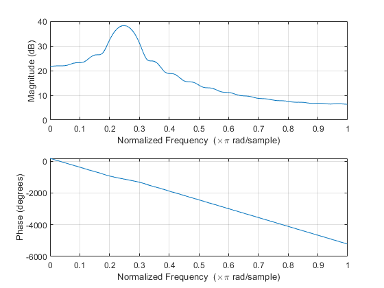

N =61; w1 = zeros(100,1); for n = 1:N w1(n) = 1; end freqz(w1); w2 = zeros(100,1); alpha = 0.5; for nn = 1:N w2(nn) = alpha-(1-alpha)*cos((2*pi*nn)/(N)); end figure(); freqz(w2); w3 = zeros(100,1); alpha = 0.54; for nn = 1:N w3(nn) = alpha-(1-alpha)*cos((2*pi*nn)/(N)); end figure(); freqz(w3); w4 =zeros(100,1); for m = 1:N if m<=N/2 w4(m) = 2*m/N; elseif m<N w4(m) = 2-(2*m/N); end end figure(); freqz(w4); w5 = zeros(100,1); for n = 1:N w5(n) = 0.42-0.5*cos(2*pi*n/N)+0.08*cos(4*pi*n/N); end figure(); freqz(w5); wc = pi/4; w6 = zeros(100,1); for n = 1:N if(n==1) w6(n) = wc/pi; elseif(n<=31) w6(n) = (wc/pi)*sin(wc*n)/wc*n; else w6(n) = 0; end end figure(); freqz(w6); 
   
  